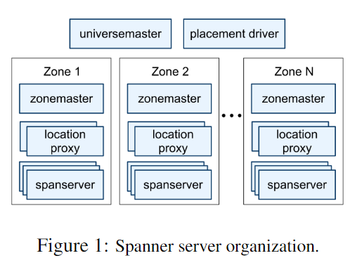
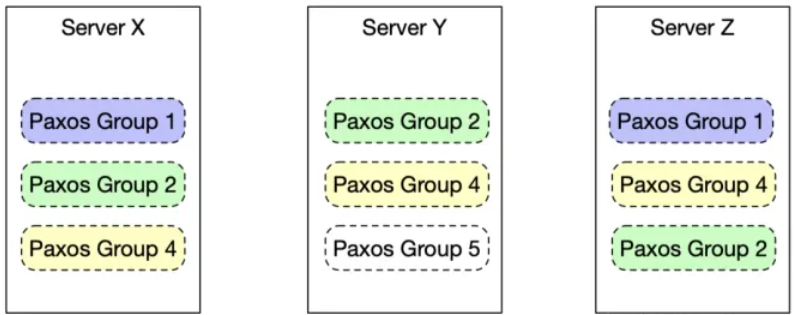
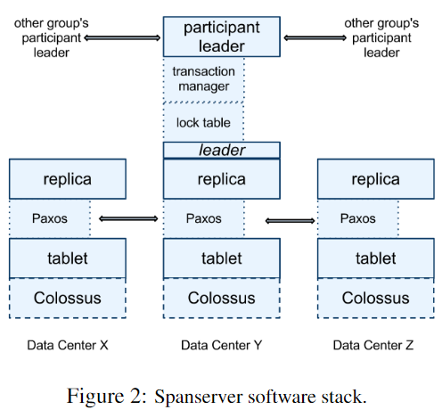
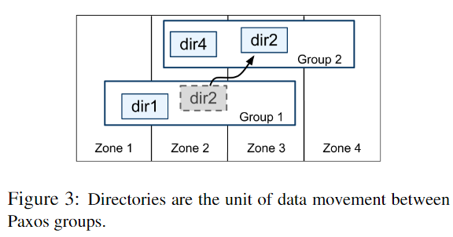
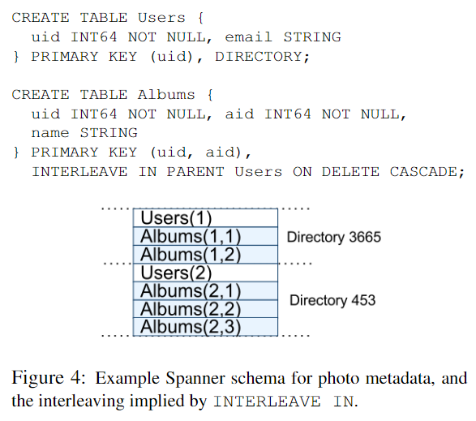
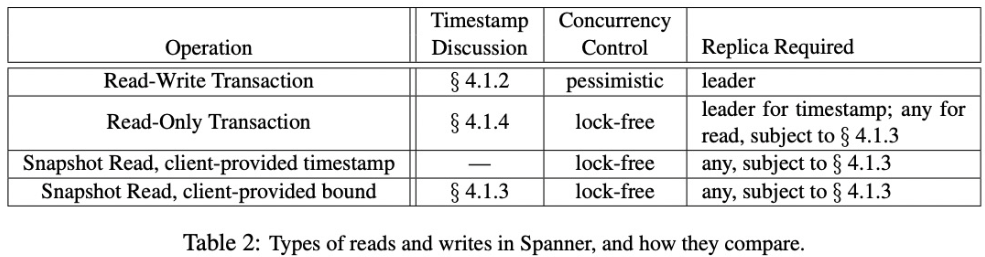
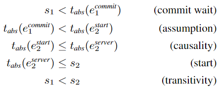

6.824 的第八篇论文是 Spanner—— Google 的可扩展、多版本、全球分布和同步复制的数据库。它是第一个在全球范围内分发数据并支持外部一致的分布式事务的系统。
简介
Spanner 中的数据是多时间版本化的，每个版本都会自动加上其提交时间的时间戳(timestamp)。ts 反映序列化顺序，即：如果事务 \(T_1\) 在另一个事务 \(T_2\) 开始之前提交，则 \(T_1\) 的 commit ts 小于 \(T_2\)。 这一机制归功于 TrueTime API 设计，通过使用多个现代时钟参考（GPS 和原子钟）来保持较小的不确定性。
Spanner 是第一个在全球范围内提供此类保证的系统。
作为一个全球分布的数据库，Spanner 不仅提供了以下特性：
- 数据的复制配置可以由应用程序动态控制；
- 应用程序可以指定哪些 data center 包含哪些数据、数据与用户之间的距离（以控制读取延迟）、副本之间的距离（以控制写入延迟）以及维护的副本数量（以控制持久性、可用性和读取性能）
- Spanner 支持跨机器重新分片(Sharding)数据，并且能在 data center 之间动态移动数据，以平衡负载。
还提供了两个在分布式数据库中难以实现的特性：
- 满足外部一致性的读取和写入；
- 利用 TrueTime 实现基于 ts 的跨数据库的全局一致读取。
实现
Spanner 部署称之为 universe，它由一系列区域(zones)组成，每个 zone 都是管理部署的单位。一个 zone 有一个 zonemaster 和若干 spanservers，前者负责将数据分配给后者，后者负责向客户提供数据。其结构如图所示：

SpanServer 软件栈结构
每个 spanserver 在底层负责若干个称为 tablet 的数据结构实例，每个 tablet 是表中的部分数据。
spanserver 采用 Paxos 协议来实现复制。为了提高 Paxos 算法的性能，他们并不是将整个机器作为 Paxos 的处理单位，而是将 spanserver 上的数据进行划分，并分配到不同的 Paxos Group，每次运行 Paxos 都仅由相关的 Paxos Group 参与。写操作必须发给 Leader，而读操作可以发给任意足够 up-to-date 的 replica 然后从其 tablet 中读取。

所有这些都在一个名为 Colossus 的分布式文件系统上。如图所示：

当前的 Spanner 实现会对每个 Paxos 写入进行两次记录：一次在 tablet 的日志中，一次在 Paxos 日志中。
spanserver 中会有一个 longlive 的 Leader，它拥有
- 一个锁表(lock table)来实现并发控制。锁表用于两阶段锁定(2PL)。只有需要同步的操作才会获取锁。
- 一个事务管理器(transaction manager)来支持分布式事务。只有当一个事务涉及多个 Paxos Group 时，事务管理器才参与其中，其中一个 Paxos Group 被选为协调者(coordinator)，该组的 participant Leader 将成为 coordinate Leader。每个事务管理器的状态存储在底层 Paxos Group 中（因此也会被复制）。
目录
为了进一步提高性能，将 Paxos Group 进一步划分为目录(Directory)——它是一组共享公共连续前缀的键。Directory 是数据迁移和负载均衡的基本单位，其所有数据都具有相同的复制配置。如下图所示。
事实上，Spanner 会将一个过大的目录分片成多个片段（片段可能来自不同的 Paxos 组）。 Movedir 在组间移动片段，而不是整个目录。

Movedir 是用于在 Paxos 组之间移动目录以及向 Paxos 组添加或删除副本的后台任务。Movedir 并不作为单个事务实现，操作的时候是先将实际数据移动到指定位置，然后再用一个原子的操作更新元数据，完成整个移动过程。故 Movdir 不会阻塞当前 client 的操作。
数据模型
Spanner 从原先 BigTable 的类关系型数据库变成了采用以下键值映射的类 KV 型数据库： \[ (key:string,\quad timestamp:int64) \rightarrow string \] 同时 Spanner 向应用程序提供
- 基于模式化半关系表的数据模型
- 查询语言
- 通用事务
Megastore支持模式化半关系表和同步复制的需求，它的数据模型更易于管理，而且支持跨 data center 的同步复制，Bigtable 仅支持跨 data center 的最终一致性复制。
Spanner 的数据模型是半关系的原因在于，每个表都需要有一组有序的 primary key。这使得 Spanner 仍然看起来像 KV 存储。
下图包含一个示例 Spanner 模式。客户端应用程序通过 INTERLEAVE IN 声明层次结构。ON DELETE CASCADE 表示删除目录表中的行会删除任何关联的子行。这种将表交错形成目录的设计允许客户端描述存在于多个表之间的局部关系，这能够提升分片分布式数据库的性能。

TrueTime
考虑到时间不确定性（如通信延迟），TrueTime并不表示某一特定时刻，而是将时间表示为一个具有有限时间不确定性的时间区间 TTinterval: [earliest, latest]。 TTinterval 的端点是 TTstamp 类型。 TrueTime API 包括以下方法：
- TT.now()：返回 TTinterval，并保证调用该方法的绝对时刻属于该区间；
- TT.after(t)：若时刻 \(t\) 已过去，则返回 true；
- TT.before(t)：若时刻 \(t\) 还未到，则返回 true。
TrueTime 利用 GPS 和原子钟两种策略进行时钟参考，因为它们会以和彼此无关的方式出现故障，故其中一个方法发生故障后，可以立刻采用另一种方法。每个 data center 都有一组 time master，大多数使用 GPS，剩下的配备了原子钟。通过定期综合比较两种 master 得到一个时间点。
并发控制
timestamp 管理
Spanner 支持 read-write 事务、read-only 事务和 snapshot read，单独写入为 RW 事务；非快照单独读取为 RO 事务。如下表所示：

RO 事务是一种具有快照隔离性能优势的事务，其以系统指定的 ts 执行，而无需锁定。
client 可以为 snapshot read 指定 ts，或指定时间边界并让 Spanner 选择合适的 ts。无论是 snapshot read 还是 read-only，都会在足够 up-to-date 的 replica 上直接读取。
无论是 RO 事务还是 snapshot read，一旦指定了 ts，就必然会 commit，除非该 ts 处的数据已被 garbage collection。当服务器发生故障时，客户端可以继续在不同服务器上通过 ts 和当前读取位置进行查询。
RW: ts = COMMIT TIME；RO: ts = START TIME
Paxos Leader Lease
Spanner 中 Paxos 的 lease 默认为 10 秒。如果租约到期，Leader 会请求延长 lease 投票。同时，Spanner 允许 Paxos Leader 主动退位。
每个 Paxos Group 中不同 Leader 的 lease 互不相交。为了保持这一 lease 不相交性，定义 \(s_{max}\) 为旧 Leader 的最大 ts，新 Leader 必须等到 \(TT.after ( s_{max} ) = true\) 才能开始工作。
RW 事务
RW 事务使用 2PL，故只能在获取所有锁之后与释放所有锁之前的任意时刻分配 ts。对于给定的写事务，Spanner 会选择 Paxos 为提交事务的那次 Paxos Write 分配的时间戳。
在每个 Paxos Group 内，Spanner 以单调递增的顺序为 Paxos Write 分配 ts。这一约束通过 lease 不相交性在不同 Leader 之间进行约束：Leader 只在其 lease 内分配 ts。
Spanner 使用 2PC 提交事务，为保证外部一致性，Spanner 作出以下约束：如果事务 \(T_2\) 的 start 发生在事务 \(T_1\) commit 之后，则 \(T_2\) 的 commit ts 必须大于 \(T_1\) 的 commit ts。并且执行事务和分配 ts 的协议遵循以下两条规则：
- START：写事务 \(T_i\) 分配的 commit ts \(s_i\) 满足 \(s_i \geq TT.now().latest\) 且 \(s_i > t_{abs}(e^{server}_i)\)；
- COMMIT WAIT：client 在 \(TT.after ( s_i ) = true\) 之前无法看到 \(T_i\) 提交的任何数据且 \(s_i < t_{abs}(e^{commit}_i)\)。
证明如下：

其中 \(e^{start}_i\) 和 \(e^{commit}_i\) 为事务启动和提交事件，\(e^{server}_i\) 为事务 commit 请求到达 coordinate Leader 的事件。
同时，为了保证任意读取都是可靠且安全的，每个 replica 都会跟踪一个称为安全时间的值 \(t_{safe}\)。replica 可以满足任意 \(ts \leq t_{safe}\) 的读取。
\(t_{safe}\) 定义为 \(\min (t^{Paxos}_{safe},\ t^{TM}_{safe})\)
\(t^{Paxos}_{safe}\) 是最新已应用的 Paxos 写入的 ts。因为 ts 单调增加并且写入是按顺序应用的，对于 Paxos 而言，不会有 ts 小于等于 \(t^{Paxos}_{safe}\) 的写入。
如果不存在 prepared 但未 commit 的事务，则 \(t^{TM}_{safe}\) 为 \(\infty\)；反之，replicas 还不知道该事务是否会提交，每个 Paxos Group \(g\) 的 Leader 为其分配一个 prepare ts \(s^{prepare}_{i,g}\) 并确保 \(s_i \geq s^{prepare}_{i,g}\)。有 \(t^{TM}_{safe} = \min_i ( s^{prepare}_{i,g} ) - 1\)。
事务中发生的 write 会在客户端缓存直至提交，这使得事务中的 read 看不到事务 write 的影响。这种设计在 Spanner 中运行良好，因为读取返回任何数据读取的时间戳，而未提交的写入尚未分配时间戳。整个事务的具体流程如下：
client 发出 read 请求，Spanner 找到合适的 replica 并获取 read lock，然后读取最新数据。当 client 保持 open 时，它会发送 keep-alive 消息以防止 Leader 超时；
当 client 完成所有 read 并缓存所有 write 时，它开始 2PC；
client 在 Paxos Group 间选出 coordinate Group 并向其它 Group 的 Leader 发送 commit 消息；
participant Leader 首先获得 write lock，然后它选择一个 prepare ts，并通过 Paxos 作好 prepare 记录，之后每个 participants 将其 prepare ts 通知 coordinate；
coordinate Leader 也首先获取 write lock，但跳过 prepare 阶段。在收到所有其他 participant Leader 的消息后，它会为整个事务选择一个大于所有 prepare ts 的 commit ts \(s\)。然后 coordinate Leader 通过 Paxos 记录进行 commit；
coordinate Leader 等待直到 \(TT.after(s)\) 后，允许 coordinate replica 应用 commit 记录（保证 COMMIT WAIT）；
coordinate 将 \(s\) 发送给 client 和所有其他 participant Leader，每个 participant Leader 都通过 Paxos 记录事务的结果。所有 participants 在相同的 ts 处应用该结果，然后释放锁。
read-write 事务中的 read 使用 wound-wait 来避免死锁。
RO 事务
RO 事务分两个阶段执行：
- 先分配一个时间戳 \(s_{read}\)；
- 在 \(s_{read}\) 处将事务的读取按照 snapshot read 执行。
在事务开始后的任何时间进行 \(s_{read} = TT.now().latest\) 的赋值，通过类似于 RW 事务中的参数来保持外部一致性。如果 \(t_{safe}\) 没有充分推进，可能需要阻塞在 \(s_{read}\) 处执行的读取。为了避免阻塞的发生，Spanner 应该分配能够保持外部一致性的最老的 ts。
整个事务的具体流程如下：
- 如果事务只涉及一个 Paxos Group，则 client 直接向该 Group 的 Leader 发出 RO 事务。将 \(LastTS()\) 定义为 Paxos Group 中最后 commit 的 write 的 ts。如果没有事务 prepared，则令 \(s_{read} = LastTS()\) 即可满足外部一致性：事务将看到最后一次 write 的结果；
- 反之，需要所有参与 read 的 Paxos Group 之间进行协商来决定 ts。Spanner 目前避免了一轮沟通，而是令 client 只在 \(s_{read} = TT.now().latest\) 处执行 read（可能会等待 \(t_{safe}\)）。事务中的所有 read 都可以发送到足够 up-to-date 的 replica。
总结
Spanner 优雅地利用了 TrueTime 实现了外部一致性以及其它强大特性，这是前所未有的创新设计。